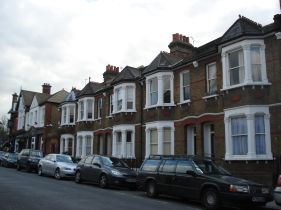
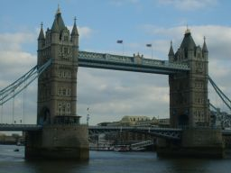
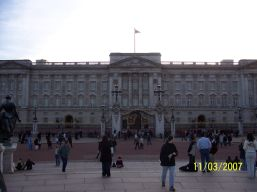
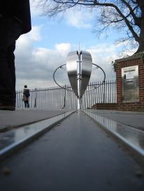

My
stay in London

We
passed a week in London, from 11th to 18th of
March. The weather was lovely, a sunny week!! We, I and Robert, were
very excited. I had never been in London and in England before. I was
looking forward to visiting the all city and the most important of
London’s symbols. We
stayed in a family as paying quests. All
of us were in pairs in different families. I was with Robert. My host
family was an Indian one. Their house was welcoming and very big. It
has 3 floors and our small room was on the attic. The family was very
hospitable and we chatted a lot with them especially with the
children. Every
morning we went to the school where we were studying English, by
underground. We used to arrive at
the school half an hour early, because the school has a information
technology room with computers, and we surfed the net and chatted on
MSN. The school is an old
building in English style. It has 3 floors and our class was on the
2nd floor. It was a small one, with 2
windows. The lessons
lasted 4 hours; we have learnt many new words, verbs and a lot of
pronunciation. The teacher’s name
was Kathy. She was a young likeable person with blonde hair and green
eyes. I think that those lessons gave me a lot in the knowledge of
English. The afternoons were
very beautiful and fun, we went to many museums, squares and
cathedrals. I wish we could have stayed longer in some places like
the British Museum or St. James’s Park. It has been a very
beautiful holiday and I would like to do one again if I had
the possibility.

Visits

Every afternoon we
met in front of the school and from there we used to take the bus or
the underground and go to the places that we had to visit. The visits
used to last until 5:00 p.m, but sometimes they lasted until 6. We
think that they were conditioned by the fact that some of our class
mates lived far from the school. We had to be at dinner around 7 so
we could not spend much time out. After diner we used to go out.
Generally the monuments and the museums were great but there were
some museums that I liked most. Among these are: Museum of London
and the Maritime Museum. At the Museum of London we have
seen
a lot of interesting stuff like: what London was like before it
became a city, the history of London from 1000 a.Ch until now. We
could also see how the Romans contributed to the British development.
We really liked it there. What we liked most were the Roman houses
and the different life-styles that were shown to us. At the Maritime
Museum we could see lots of ships and boats. We have been able to see
a traditional ship from the time of Admiral Nelson. The guide
explained to us that the Admiral was some kind of a general for
ships. We think that the
British Museum is bigger then any other museum
that is in
London. It was huge. We didn’t have time to see it all. We are
sorry about that and we hope that when we return, we will be able see
it all. The other museums
were beautiful too. We liked very much The National Gallery
where we could admire some very beautiful pictures. The Science
Museum was also very
interesting. We could see a F1 car. It was a
Mercedes. We could see other things too, like: old planes, old cars,
very big wheels, some very interesting gadgets and many others. All in
all, we liked
London and its attractions very much.

My
stay in london
I
stayed in London for 7 days, from Sunday 11.03 until Sunday 18.03.
Generally I had a good time there, the weather was good and we had
only sunny days.
I
studied in a very nice school. It wasn’t very big but it was very
beautiful. It had a very beautiful architecture and it had an english
style. It had 3 floors and my classroom was on the 3rd
floor. The
English teacher that I had was very nice and very funny. I was never
bored at her lessons. Her name was Kathryn but she told us to call
her Katy. She was tall and slim, she had green eyes, long blond hair,
small ears, small nose and a small mouth too. She loved to speak and
she told us many things about her life, like: “I had 3
fathers”,
“My boyfriend name’s Sunny and he is Indian”, and
many other
things. I realised that she liked to travel and to have fun. She had
an outgoing and interesting personality. Her lessons were very
interesting and funny. I’ve learned o lot of stuff and above all,
I
improved my pronunciation.
About
the host family there is not much to say. They came from Bangladesh;
the family was composed of 6 members: father, mother and their four
sons. They were very kind and friendly. The landlord taught me the
rules of Cricket, the national sport in England. I had dinner
at
home only 2 times and it wasn’t so bad. The landlord worked in a
restaurant and the lady stayed at home.
In
the afternoons I went to visit some museums and monuments. I liked
“The Globe” and “Science museum” the most. I
liked “The
Globe” because I like theatre
and at the “Science Museum” I could see a lots of gadgets.
All
in all, I had a great time in London and I wish I could return some
day.
